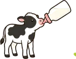
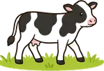
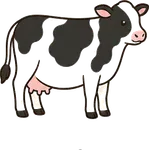
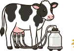
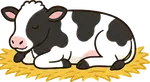
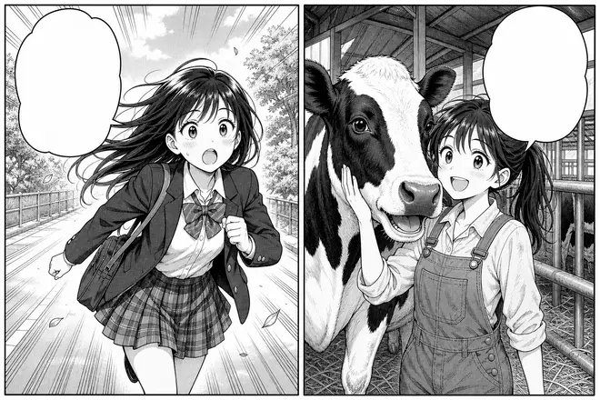
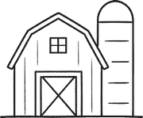

7つのお仕事
牛の一生と7つの仕事
牛が生まれて乳をしぼるまでの
どの場面にも、かならず
だれかの出番があります。
酪農ヘルパー
搾乳スタッフ
育成スタッフ
大動物獣医師
削蹄師
家畜人工授精師
チーズ職人
牛の一生をみんなで支える
誕生

哺乳期
育成期
初産
搾乳期
乾乳期現場を1分で見る
働く人に会いに行く
読む・試す・数える
まんが 牛舎の朝
する！ 牛といる
のが好き

ちこくする！ 牛といる
のが好き
向いてる仕事さがし
5つの質問に答えるだけ。
3つの数字

214戸加盟牧場- 1,860人のべ参加者
- 327人就職した先輩